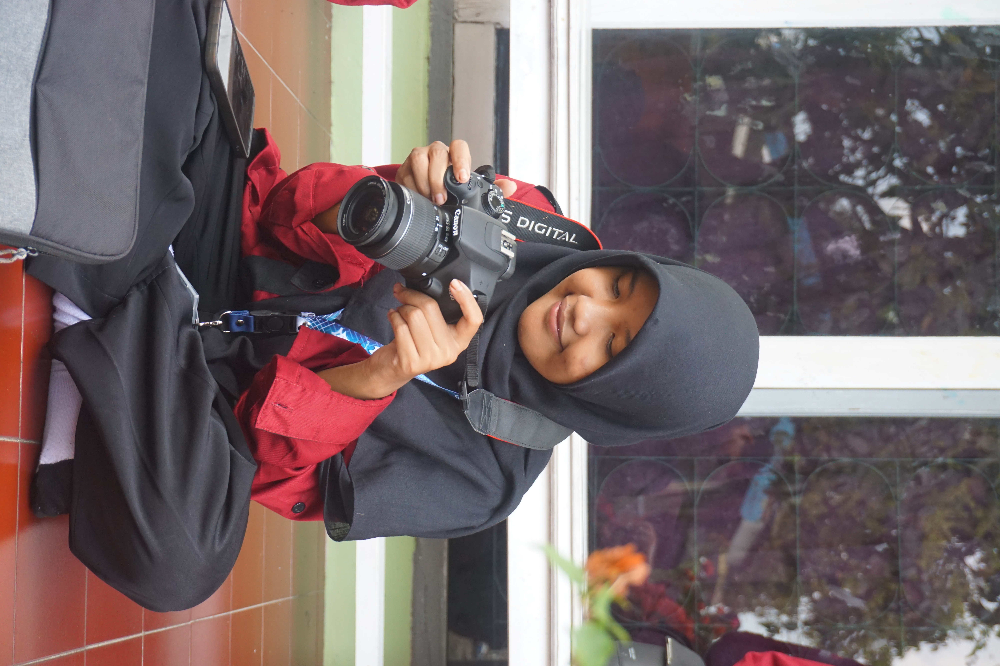

Halo!
Salwa Salsabila
Mahasiswa PTIK UNNES yang sedang belajar membangun aplikasi web, API, AI, dan AR.

simpan sebagai foto.JPG
Profil
- Nama
- Salwa Salsabila
- NIM
- 2505090035
- Program studi
- Pendidikan Teknik Informatika dan Komputer (PTIK)
- Tahun angkatan
- 2025
- Universitas
- Universitas Negeri Semarang
Kesibukan selain kuliah
BSO EneRC
Aku bergabung di organisasi dan kepanitiaan BSO EneRC (Engineering Research Club) Fakultas Teknik UNNES. Di sini aku belajar bekerja dalam tim, mengatur waktu, dan menyelesaikan proyek bersama.
Bidang IT yang ingin kudalami
Tujuanku menjadi full stack developer. Pilih salah satu bidang untuk melihat alasannya.
API
API adalah jembatan antara tampilan web dan data. Aku ingin bisa merancang API yang rapi, aman, dan mudah dipakai, supaya sisi frontend dan backend saling terhubung dengan baik.
- REST API dan JSON
- Autentikasi dan keamanan dasar
- Dokumentasi API
AI
Aku tertarik memakai AI untuk membuat aplikasi lebih membantu penggunanya, misalnya asisten belajar dan fitur yang bisa memahami pertanyaan pengguna.
- Integrasi model AI lewat API
- Prompt engineering
- Dasar machine learning
AR
Augmented reality membuat materi yang sulit dibayangkan jadi bisa dilihat langsung. Aku ingin membuat pengalaman AR yang berguna untuk belajar.
- AR berbasis web
- Model 3D dasar
- Interaksi dan antarmuka AR
Cita-cita
Menjadi full stack developer yang membangun produk berbasis AI dan AR untuk pendidikan, sekaligus menjadi pendidik teknologi yang membagikan ilmunya.